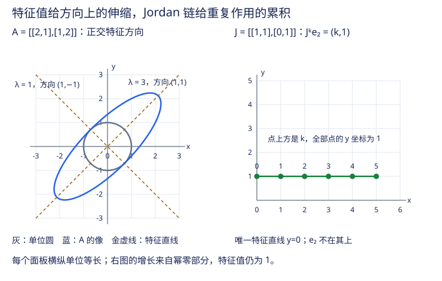

本页目录
高代 V · 特征值与标准形
上一页的问题在此求解：给定线性变换，找一组基使它的矩阵最简单。答案分两层——运气好（可对角化）时矩阵能变成对角阵，变换 = 沿特征方向各自伸缩；运气不好时也有兜底的最简形态：Jordan 标准形。特征值理论是线性代数的“光谱学”：先看特征值，再看特征子空间与 Jordan 结构。
先修：多项式与整除、矩阵与核像、线性空间与换基。本页先在实平面观察，再明确何时转入复数域；后续内积与谱定理解释正交特征基和 SVD。
一道具体谜题：什么方向没有被转弯？
想象一张带方格的透明胶片，原点固定，胶片上的每个箭头都被同一个矩阵 \(A\) 搬到新位置。大多数箭头会改变长度，也会改变方向；但有些方向可能只被拉长、压短，甚至反向。问题是：怎样从几何图像中找出这些方向？
先预测
请在实验台中依次点击四个预设，并在观察前先做三件事：
- 只看变换前的方向，预测哪些方向会保留；
- 预测向量 \(x\) 与 \(Ax\) 的长度和方向关系；
- 预测单位圆的主轴是否一定给出特征方向。
实验台把网格、单位圆、向量和实特征方向分层画出；你要解释的是“为什么”，不是记住某张图。
最小模型
取一个非零向量 \(x\)。如果存在数 \(\lambda\) 使
那么 \(x\) 所张成的过原点直线被 \(A\) 映入自身，这条直线的方向就是特征方向，\(x\) 是该方向上的一个特征向量。它通常不是固定点：\(\lambda=2\) 会把箭头变长，\(0<\lambda<1\) 会把箭头压短，\(\lambda<0\) 还会把箭头反向；\(\lambda=0\) 则把整条直线压到原点。长度缩放因子是 \(\lvert\lambda\rvert\)，同一条方向上的任意非零倍数都代表同一个特征方向。
单位圆上的点同时满足 \(x_1^2+x_2^2=1\)。矩阵把它变成椭圆（可逆时）或退化椭圆；这是整个圆的集合图像，不等于每一条半径都是特征方向。只有在额外的对称性下，椭圆的主轴才有那个特权。
可操作实验：eigen-geometry
无脚本静态读法：四个预设的精确答案
| 预设 | 精确特征值 | 实特征方向（方向可取任意非零倍数） |
|---|---|---|
| \(\operatorname{diag}(2,\tfrac12)\) | \(2\to\operatorname{span}\{(1,0)^\mathsf{T}\}\)；\(\tfrac12\to\operatorname{span}\{(0,1)^\mathsf{T}\}\) | 两条坐标轴 |
| \(\begin{pmatrix}2&1\\1&2\end{pmatrix}\) | \(3\to\operatorname{span}\{(1,1)^\mathsf{T}\}\)；\(1\to\operatorname{span}\{(1,-1)^\mathsf{T}\}\) | 两条正交方向 |
| \(\begin{pmatrix}1&1\\0&1\end{pmatrix}\) | \(1\)（代数重数 2） | 只有 \(\operatorname{span}\{(1,0)^\mathsf{T}\}\)；几何重数 1，不可对角化 |
| \(\begin{pmatrix}0&-1\\1&0\end{pmatrix}\) | \(i\)，\(-i\) | 没有非零实特征向量；在复数域可取 \((1,-i)^\mathsf{T}\) 对应 \(i\)，\((1,i)^\mathsf{T}\) 对应 \(-i\) |
在对称矩阵预设中，单位圆的椭圆主轴确实沿 \((1,1)\) 与 \((1,-1)\)；这来自实对称矩阵的正交谱定理。Jordan 预设的单位圆仍是一般椭圆，但只有一条实特征方向；旋转预设把单位圆保持为圆，却没有实特征方向。
同一矩阵反复作用：看见 Jordan 的线性因子
实验的几何图始终比较一次作用 \(x\mapsto Ax\)；下方独立的幂读数固定初值 \(e_2=(0,1)^{\mathsf T}\)，让你选择整数 \(k=0,\ldots,20\)。两者初值不同，不能混读。对 Jordan 预设
所以 \(k=0,1,5,20\) 时分别得到 \((0,1),(1,1),(5,1),(20,1)\)，长度为 \(\sqrt{k^2+1}\)。虽然两个特征值都为 1，向量仍可持续增长。反过来，对角预设有特征值 2，但 \(A^ke_2=(0,2^{-k})\) 衰减：矩阵的最大增长率不等于每个初值的增长率。四个固定预设的幂由下文公式给出，读数不把数值求 Jordan 形当作黑箱。
三道迁移题
- 90 度旋转 \(R\) 的最小多项式是 \(z^2+1\)，没有重根。为什么它仍不能在实数域对角化？换到复数域后呢？
- 若 \(J=\begin{pmatrix}1&1\\0&1\end{pmatrix}\)，求 \(J^{10}e_1\)、\(J^{10}e_2\)。为什么“谱半径为 1，所以所有向量长度不变”错了？
- 某五阶矩阵 \(A\) 唯一特征值为 2，令 \(N=A-2I\)，已知 \(\operatorname{rank}(N^j)\) 对 \(j=0,1,2,3\) 依次为 \(5,3,1,0\)。求 Jordan 块、最小多项式和是否可对角化。
展开三道迁移题答案
- \(z^2+1\) 在实数域不能分解成一次因子；实对角阵必须有实特征值。复数域中它分裂成 \((z-i)(z+i)\)，两根不同，故可对角化。特征向量可取 \((1,-i)^{\mathsf T},(1,i)^{\mathsf T}\)。
- \(J^{10}=I+10N\)，两结果为 \((1,0)^{\mathsf T}\) 与 \((10,1)^{\mathsf T}\)，长度为 1 与 \(\sqrt{101}\)。幂零部分每次把第二坐标加进第一坐标；它产生线性增长，而非新的指数增长率。
- 秩差为 \(2,2,1\)，即至少长 1、2、3 的块分别有 2、2、1 个。因此是 \(J_3(2)\oplus J_2(2)\)；最小多项式 \((z-2)^3\)，特征多项式 \((z-2)^5\)，几何重数 2，不可对角化。
误区与边界
- 特征向量不是“固定不动的向量”。 \(Ax=\lambda x\) 表示方向所在直线不变；只有 \(\lambda=1\) 时这个具体向量才不变，\(\lambda=-1\) 会反向，其他值会改变长度。
- 重复特征值不保证可对角化。 Jordan 预设只有一个独立的实特征方向，虽然 \(\lambda=1\) 出现两次，仍不能凑出一组二维特征基。
- 一般实矩阵不一定有实特征向量。 90 度旋转的特征值是 \(i\) 与 \(-i\)，所以在实平面中没有可画出的特征方向；“实矩阵”不等于“特征值全为实数”。
- 单位圆的椭圆主轴不是普遍答案。 “主轴就是特征向量”只在实对称等保证正交主轴的特殊情形成立；一般实矩阵的方向可能发生剪切，不能从椭圆主轴直接读出全部特征向量。
- 不要把对角化当成普遍结论。 只有拥有足够多线性无关的特征向量时才能对角化；否则要使用 Jordan 形或其他适合的分解。
- 幂的长期行为也有边界。 谱半径控制渐近指数率，但主导 Jordan 块会带来 \(k^r\) 因子；非正规矩阵在长期渐近以前还可能出现明显的瞬态放大。
返回正式理论
把实验中的“保留方向”写成方程，就是
先由特征多项式找候选 \(\lambda\)，再求核空间 \(V_\lambda=\ker(\lambda I-A)\)，最后比较几何重数和代数重数。这个流程解释了四个预设的差别：互异特征值给出独立方向；重复特征值要检查核空间维数；复特征值需要换到复数域；Jordan 块记录缺失的特征方向如何被幂零部分补上。
1. 特征值与特征向量
本页所有矩阵均为有限阶方阵。讨论对角化时必须指定底域 \(F\)；未另说明的完整谱与 Jordan 结论在 \(\mathbb C\) 上理解，实平面的方向图只画实向量。

定义 \(A\xi = \lambda\xi\ (\xi \neq 0)\)：\(\xi\) 是所在直线被保持的非零向量，\(\lambda\) 是伸缩率；当 \(\lambda<0\) 时箭头反向，特征向量描述的是方向而非固定不动的点。
求法：\((\lambda I - A)\xi = 0\) 有非零解 \(\iff\) 特征多项式 \(f(\lambda) = \det(\lambda I - A) = 0\)。\(n\) 阶方阵在 \(\mathbb{C}\) 上恰有 \(n\) 个特征值（计重数）。
两个恒等式（验算神器 + 考试常客）：
性质速查：\(A\) 与 \(A^\top\) 特征值相同；\(f(A)\) 的特征值为 \(f(\lambda_i)\)（先由 \(A^k\xi=\lambda^k\xi\) 证明已有特征向量上的作用；要证明完整谱及其重数，在复数域把 \(A\) 三角化，\(f(A)\) 的对角元恰为 \(f(\lambda_i)\)）；可逆时 \(A^{-1}\) 的特征值为 \(\lambda_i^{-1}\)；相似矩阵特征多项式相同（\(\det(\lambda I - T^{-1}AT) = \det(T^{-1}(\lambda I - A)T)\)）；三角阵特征值 = 对角元。
特征子空间 \(V_\lambda = \ker(\lambda I - A)\)。几何重数 \(\dim V_\lambda\) ≤ 代数重数（\(\lambda\) 在特征多项式中的重数）。为什么有这个上界？ 把特征子空间的一组基（共 \(g\) 个向量）扩成全空间的基，矩阵成为块上三角 \(\begin{pmatrix}\lambda I_g&*\\0&B\end{pmatrix}\)，于是特征多项式含 \((z-\lambda)^g\) 因子。
2. 对角化
定理（对角化判据） \(n\) 阶方阵 \(A\) 可对角化（\(\exists\) 可逆 \(T\)：\(T^{-1}AT = \mathrm{diag}(\lambda_1,\dots,\lambda_n)\)）\(\iff\) \(A\) 有 \(n\) 个线性无关的特征向量 \(\iff\) 特征多项式在底域中分裂，且每个特征值的几何重数 = 代数重数。充分条件：\(n\) 个特征值互异（不同特征值的特征向量自动线性无关——归纳可证）。这里的互异特征值也必须属于所选底域。不同特征值的向量为何独立？若有最短非平凡关系 \(\sum_{i=1}^r c_i v_i=0\)（所有 \(c_i\ne0\)），作用 \(A-\lambda_r I\) 会得到只含前 \(r-1\) 个向量的非平凡关系，因为 \(\lambda_i-\lambda_r\ne0\)；矛盾。把各个特征子空间的基合起来同样独立，合计达到 \(n\) 才形成全空间的基。
\(T\) 的列 = 特征向量，对角元 = 对应特征值（顺序配套）。对角化的红利：
矩阵幂/矩阵函数一步到位（线性递推如 Fibonacci 通项、Markov 链的迭代分析；但极限存在还要另验收敛条件）。
不可对角化的最小反例：\(\begin{pmatrix} 0 & 1 \\ 0 & 0 \end{pmatrix}\)——特征值 0（代数重数 2），特征向量只有一维（几何重数 1）。缺的那个方向就是 Jordan 理论要补的。
3. Cayley–Hamilton 与最小多项式
定理（Cayley–Hamilton） 把 \(A\) 代入自己的特征多项式得零矩阵：\(f(A) = 0\)。（用途：降幂——高次 \(A^k\) 用特征多项式除法降到 \(n\) 次以下；求逆的多项式表达。）
C–H 的一种验证思路：恒等式 \((zI-A)\operatorname{adj}(zI-A)=f(z)I\) 中，将伴随矩阵按 \(z\) 的幂展开并比较系数，得到最高系数为 \(I\)、其余系数逐次为 \(A\) 的多项式；常数项递推最后给出 \(f(A)=0\)。不能把“行列式里直接把标量 \(z\) 换成矩阵”当作证明。
最小多项式 \(m(\lambda)\)：使 \(m(A) = 0\) 的最低次首一多项式。性质：整除一切零化多项式（尤其 \(m \mid f\)）；根恰为全部特征值（重数可低于代数重数）。判据升级：
“无重根”是上述条件在已保证分裂时的缩写，不能省掉底域。若 \(m(z)=\prod_i(z-\lambda_i)\)，令
Lagrange 插值给出 \(\sum_iP_i=I\)；又 \((A-\lambda_iI)P_i=0\)，因为分子含 \(m(A)\)。于是每个 \(v=\sum_iP_iv\) 都分解为特征向量分量，配合不同特征值子空间独立即得特征基。反向则对角阵被互异根之积零化。最小多项式为何整除任一零化多项式 \(q\)？作带余除法 \(q=hm+r\)，代入 \(A\) 得 \(r(A)=0\)；若 \(r\ne0\)，归一成首一后违背最小次数，因此余式必须为零。
（例：幂等阵 \(A^2 = A\) 的 \(m \mid \lambda^2 - \lambda\) 无重根 ⇒ 投影必可对角化，特征值只有 0/1——与高代 IV 例 3 的直和分解互为表里。）
4. Jordan 标准形（兜底定理）
Jordan 块 \(J_k(\lambda) = \begin{pmatrix} \lambda & 1 & & \\ & \lambda & \ddots & \\ & & \ddots & 1 \\ & & & \lambda \end{pmatrix}\)（对角 \(\lambda\)、上对角 1）。
定理 复数域上任意方阵相似于唯一的（不计块序）Jordan 形 \(J = \mathrm{diag}(J_{k_1}(\lambda_1), \dots)\)。这不是说任意矩阵都可对角化；只有所有 Jordan 块大小都为 1 时才是对角阵。
结构解读：在复数域的一组 Jordan 基下，\(J_k(\lambda)=\lambda I+N\)，\(N\) 幂零（\(N^k=0\)）；把各块的对角部分合在一起得到半单部分 \(S\)，把上对角部分合在一起得到幂零部分 \(N\)，且 \(SN=NS\)。因此是在 Jordan 基下（等价地，使用可交换的半单–幂零分解）的 \(A=S+N\)，不是原坐标中任意逐项的拆分。对角化失败的障碍被隔离进幂零部分。
计算实务（会算 \(\leq 4\) 阶即可）：特征值 \(\lambda\) 的块总数 = 几何重数。令 \(N=A-\lambda I\)，则 \(\mathrm{rank}(N^{j-1})-\mathrm{rank}(N^j)\) 恰等于尺寸 \(\geq j\) 的 Jordan 块个数；这串秩差因此确定块的尺寸分布。理由是：属于 \(\lambda\) 的长 \(s\) 块在 \(N^j\) 中秩为 \(\max(s-j,0)\)，相邻差为 1 当且仅当 \(s\ge j\)；其他特征值的块在 \(N\) 中可逆，对各次幂贡献同一满秩，相减后抵消。因此全矩阵也能使用此公式。至少长 \(j\) 的块数减去至少长 \(j+1\) 的块数，就是恰长 \(j\) 的块数。
链给缺失方向一个具体位置。 对 \(J_3(\lambda)\)，\(Ne_1=0,Ne_2=e_1,Ne_3=e_2\)。只有 \(e_1\) 是特征方向；\(e_2,e_3\) 是广义特征向量，记录扰动经过几次作用才进入核。对整数 \(m\ge0\)，交换性和二项式公式给出
只在这条多项式公式中约定零次幂为 1，故 \(\lambda=0\) 时也成立：\(J_s(0)^m=N^m\)，当 \(m\ge s\) 就为零；不能把这个情形套进含 \(\lambda^{-j}\) 的写法。
瞬态放大可直接算。 \(B=\begin{pmatrix}1/2&4\\0&1/2\end{pmatrix}\) 的谱半径为 \(1/2\)，但 \(Be_2=(4,1/2)\) 长度大于 4；对 \(k\ge1\)，
最初放大与最终衰减可以同时发生。Jordan 形是精确代数分类；浮点计算一般采用 Schur 分解等方法。微小扰动 \(\begin{pmatrix}1&1\\\varepsilon&1\end{pmatrix}\) 的特征值为 \(1\pm\sqrt\varepsilon\)（\(\varepsilon>0\)），任意小非零扰动就能把一个 Jordan 块分成两个互异根，说明精确块结构对噪声敏感。
谱半径与应用边界：对任意次乘性矩阵范数，\(\lim_{k\to\infty}\|A^k\|^{1/k}=\rho(A)\)。当 \(\rho(A)>0\) 时，Jordan 幂中的多项式因子取 \(k\) 次根趋于 1，解释了这一指数率；当 \(\rho(A)=0\) 时有限维矩阵幂零，足够高次幂直接为零。单个初值可能没有最大特征值的分量，故增长更慢；即使有该分量，非正规矩阵的瞬态也不能只靠谱半径描述。数值线性代数继续讲幂法与数值分解。在线性且权重固定的递推中可以直接研究 \(W^k\)；一般 RNN 的梯度则是随状态变化的 Jacobian 连乘，不能用某一个 \(W\) 的谱半径替代全过程。
5. 实用速查：矩阵幂三条路
| 场景 | 方法 |
|---|---|
| 可对角化 | \(A^k = T\Lambda^k T^{-1}\) |
| 不可对角化 | Jordan：\(J_k(\lambda)^m\) 有显式二项式公式（\(\lambda I\) 与 \(N\) 交换） |
| 只要低次信息 | Cayley–Hamilton 降幂 |
6. 典型例题
例 1（完整对角化流程） \(A = \begin{pmatrix} 4 & 6 & 0 \\ -3 & -5 & 0 \\ -3 & -6 & 1 \end{pmatrix}\)。 解：\(\det(\lambda I - A) = (\lambda - 1)^2(\lambda + 2)\)。\(\lambda = 1\)：解 \((I - A)x = 0\) 得两个无关特征向量 \((-2,1,0)^\top, (0,0,1)^\top\)，代回分别为 \(A(-2,1,0)^\top=(-2,1,0)^\top\)、\(A(0,0,1)^\top=(0,0,1)^\top\)（几何重数 2 = 代数重数 ✓）；\(\lambda = -2\)：可取 \((-1,1,1)^\top\)，且 \(A(-1,1,1)^\top=(2,-2,-2)^\top=-2(-1,1,1)^\top\)。可对角化，\(T\) 三列拼特征向量，\(T^{-1}AT = \mathrm{diag}(1,1,-2)\)。另外 \(\mathrm{tr}\,A=0=1+1-2\)，\(\det A=-2=1\cdot1\cdot(-2)\)，与恒等式一致。流程：特征多项式 → 逐特征值解齐次组 → 代回验算 → 数无关向量个数做判据。
例 2（Fibonacci 通项） 取 \(F_0=0,F_1=1\)，递推 \(F_{n+1}=F_n+F_{n-1}\)（\(n\ge1\)）。 \(\begin{pmatrix} F_{n+1} \\ F_n \end{pmatrix} = \begin{pmatrix} 1 & 1 \\ 1 & 0 \end{pmatrix}\begin{pmatrix} F_n \\ F_{n-1} \end{pmatrix}\)。特征值 \(\varphi = \frac{1+\sqrt5}{2},\ \psi = \frac{1-\sqrt5}{2}\)，对角化后取幂得
这里 \(n\ge0\)；代入 \(n=0,1\) 可核对初值，两个幂项都满足同一递推，故由归纳唯一性得到通项。
例 3（C–H 降幂） \(A^2 = A + 2I\)（即 \(m(\lambda) \mid \lambda^2 - \lambda - 2 = (\lambda-2)(\lambda+1)\)，无重根 ⇒ 可对角化），求 \(A^{10}\) 关于 \(A, I\) 的表达。 解：设 \(\lambda^{10} = q(\lambda)(\lambda^2 - \lambda - 2) + a\lambda + b\)，代 \(\lambda = 2, -1\)：\(1024 = 2a + b,\ 1 = -a + b\) ⇒ \(a = 341, b = 342\)。故 \(A^{10} = 341A + 342 I\)。\(\blacksquare\)
最后一页：给空间装上"长度与角度"（内积），实对称矩阵的谱定理在此加冕，并连向机器学习的第一主力分解——SVD。
7. 继续阅读
MIT 18.701 讲义第 9–11 讲可继续核对特征基、Jordan 块与广义特征空间；LAPACK Working Note 106区分 Schur 与 Jordan 分解，并讨论后者的数值敏感性。本页固定小矩阵的精确公式用于理解机制，不承诺对任意带噪矩阵可靠识别 Jordan 块。